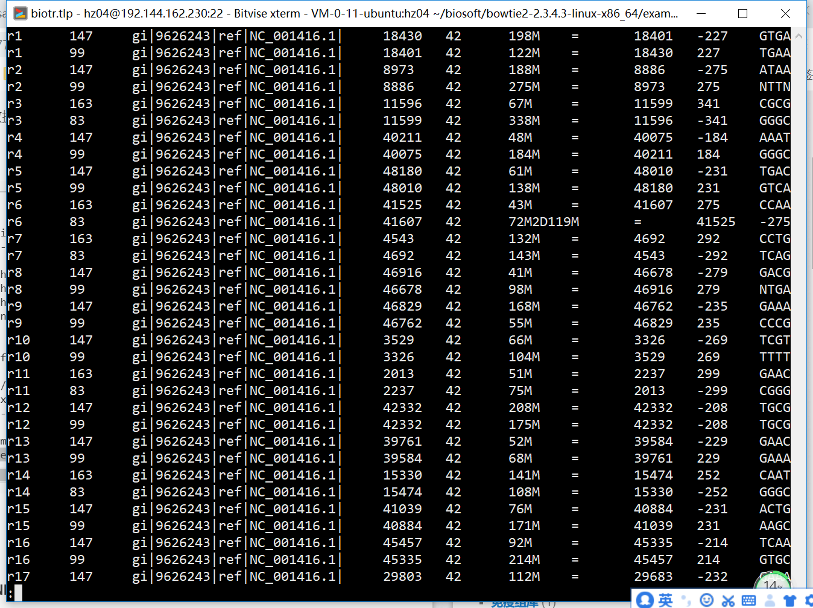
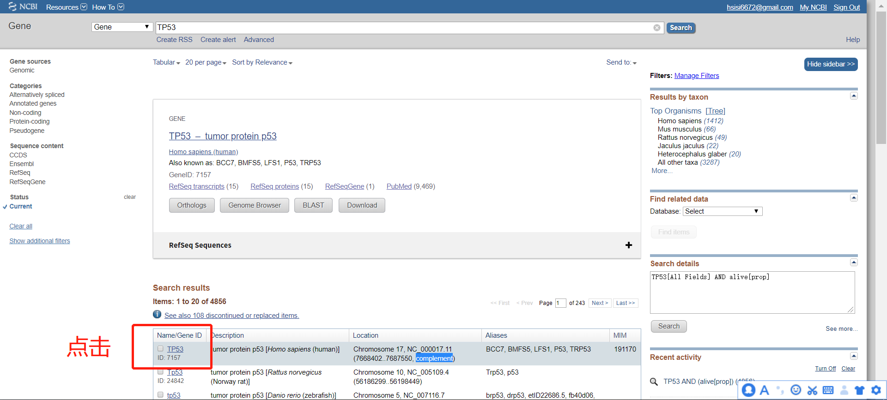
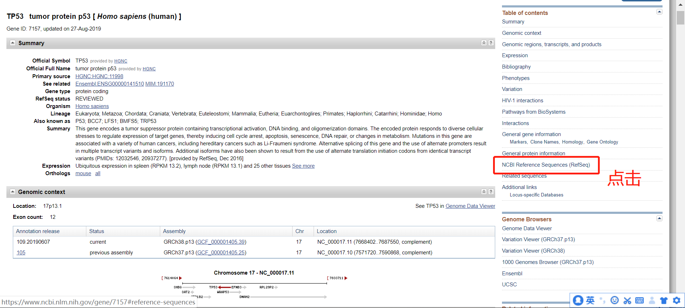

基础知识
Tab键 命令、路径、文件匹配，两次Tab寻找文件名
\n 回车 \t tab键，可以用Excel打开
分隔符 (重新定义文本切割分隔符）sep cut
进入路径：cd 上层目录：cd .. 家目录：cd enter or cd ~
查看当前路径的文件大小 ls –lh (long human)
建立多层路径：mkdir -p
建立文本：touch new.txt功能：确认是否有写入权限（debug）
删除一个文本：rm 删除路径：rm -r
拷贝文件：cp ~/myproject/1/temp.txt ~/myproject/2/
拷贝文件夹：cp -r ~/myproject/1/ ~/myproject/2/
查看文本：less -S 单行显示 -N 带行号 q 退出
cat >newfile.txt 可进行编辑 ctrl+c退出 > 覆盖 >> 继续写入
查看文本输出到屏幕 cat 小文本（大文本从前往后）| less -S
查看文本前十行：head 后十行：tail
编辑文本：vim esc :wq
树形展示目录：tree -d
移动文本/文件夹实现方法：mv
对一个文本/目录更名实现方法：mv
建立软连接的实现方法：ln -s
Linux系统 是一套免费使用和自由传播的类Unix操作系统，是一个基于POSIX和UNIX的多用户、多任务、支持多线程和多CPU的操作系统。目前市面上较知名的发行版有：Ubuntu、RedHat、CentOS、Debian、Fedora、SuSE、OpenSUSE、Arch Linux、SolusOS 等。
优势：批量处理任务、处理大文本、运行速度快、登录远程服务器获取数据/文件
/：根目录，一般根目录下只存放目录，不存放文件
基础操作
pwd查看当前目录，top -c查看cpu使用
修改颜色显示（只是好看些）
1 PS1="\[\033]2;\h:\u \w\007\033[33;1m\]\u \033[35;1m\t\033[0m \[\033[36;1m\]\w\[\033[0m\]\n\[\e[32;1m\]$ \[\e[0m\]"
1 find / -name '*.fa*.gz' -size +500M
1 2 $ echo 'export PATH=~/.aspera/connect/bin:$PATH' >> ~/.bashrc $ source ~/.bashrc
然而第一句话很容易写错，比如等号后面多空格等，于是就要人工vim修改
1 $ /usr/bin/vim ~/.bashrc
1 2 3 4 5 $ echo ATGCGGCG|tr 'G' '#' $ echo ATGCGGCG|tr 'AG' 'CT' $ echo ATGCGGGG|tr 'AG' 'TC' |rev $ echo ATGCGGGG|tr 'AGTC' 'TCAG' |rev
直接指定按照第一列排序，第一列含有字符r，没法识别为数字，所以指定-n参数实现不了，加上-t参数指定以r为分隔符，然后按照第二列排序就是纯数字了，就可以实现需求
1 samtools view tmp.bam|sort -t r -k 2 -n|less -S

一般我习惯
1 tar -xvzf archivename.tar.gz
此命令将解压archivename.tar.gz文件到当前目录下，x表示解压目录；v产生详细的进度输出（详细模式），如果在Shell脚本中使用tar，则可能应该忽略它；z使用gzip解压缩存档，这仅适用于已经通过gzip压缩的压缩包，例如，使用z选项创建的压缩包；f文件名是下一个参数。
1 unzip xxx.zip target_archive_dir
1 ln -s original_dir link_dir
最低要求 一、在任意文件夹下面创建形如 1/2/3/4/5/6/7/8/9 格式的文件夹系列。
1 2 3 4 (base) hz04 19:32:03 ~ $ cd homework (base) hz04 19:33:09 ~/homework $ mkdir -p 1/2/3/4/5/6/7/8/9
二、在创建好的文件夹下面，比如我的是 /Users/jimmy/tmp/1/2/3/4/5/6/7/8/9 ，里面创建文本文件 me.txt。
1 2 3 4 (base) hz04 19:33:32 ~/homework $ cd 1/2/3/4/5/6/7/8/9/ (base) hz04 19:33:48 ~/homework/1/2/3/4/5/6/7/8/9 $ touch me.txt
三、在文本文件 me.txt 里面输入内容:
1 2 3 4 5 6 7 8 9 10 11 12 13 (base) hz04 19:34:03 ~/homework/1/2/3/4/5/6/7/8/9 $ vim me.txt i # 输入文字 Go to: http://www.biotrainee.com/ I love bioinfomatics. And you ? # esc :wq enter (base) hz04 19:36:02 ~/homework/1/2/3/4/5/6/7/8/9 $ cat me.txt Go to: http://www.biotrainee.com/ I love bioinfomatics. And you ?
四、删除上面创建的文件夹 1/2/3/4/5/6/7/8/9 及文本文件 me.txt
1 2 (base) hz04 18:11:11 ~/homework $ rm -r *
五、在任意文件夹下面创建 folder1~5这5个文件夹，然后每个文件夹下面继续创建 folder1~5这5个文件夹。
1 2 3 4 5 6 7 8 9 10 11 12 13 14 15 16 17 18 (base) hz04 19:36:22 ~/homework/1/2/3/4/5/6/7/8/9 $ mkdir -p folder{1..5}/folder{1..5} (base) hz04 19:39:40 ~/homework/1/2/3/4/5/6/7/8/9 $ ls */ folder1/: folder1 folder2 folder3 folder4 folder5 folder2/: folder1 folder2 folder3 folder4 folder5 folder3/: folder1 folder2 folder3 folder4 folder5 folder4/: folder1 folder2 folder3 folder4 folder5 folder5/: folder1 folder2 folder3 folder4 folder5
六、在第五题创建的每一个文件夹下面都 创建第二题文本文件 me.txt ，内容也要一样。
1 2 (base) hz04 18:14:47 ~/homework $ for i in {1..5};do for j in {1..5};do cp me.txt folder$i /folder$j ;done done
或者使用 xargs 进行参数传递
1 2 (base) hz04 18:24:06 ~/homework $ echo folder{1..5}/folder{1..5}|xargs -n 1 cp me.txt
七，再次删除掉前面几个步骤建立的文件夹及文件。
1 2 3 4 5 6 7 (base) hz04 18:24:29 ~/homework $ ls folder1 folder2 folder3 folder4 folder5 me.txt (base) hz04 18:28:11 ~/homework $ rm -r * (base) hz04 18:28:17 ~/homework $ ls
八、下载 http://www.biotrainee.com/jmzeng/igv/test.bed 文件，后在里面选择含有 H3K4me3 的那一行是第几行，该文件总共有几行。
1 2 3 4 5 6 7 (base) hz04 18:34:43 ~/homework $ wget -c http://www.biotrainee.com/jmzeng/igv/test.bed $ grep -n --color H3K4me3 test.bed 8:chr1 9810 10438 ID=SRX387603;Name=H3K4me3%20(@%20HMLE);Title=GSM1280527:%20HMLE%20Twist3D%20H3K4me3%20rep2%3B%20Homo%20sapiens%3B%20ChIP-Seq;Cell%20group=Breast;<br>source_name=HMLE_Twist3D_H3K4me3;cell%20type=human%20mammary%20epithelial%20cells;transfected%20with=Twist1;culture%20type=sphere;chip%20antibody=H3K4me3;chip%20antibody%20vendor=Millipore; 222 . 9810 10438 0,226,255 (base) hz04 18:34:53 ~/homework $ wc -l test.bed 10 test.bed
九、下载 http://www.biotrainee.com/jmzeng/rmDuplicate.zip 文件，并且解压，查看里面的文件夹结构。
1 2 3 (base) hz04 18:38:53 ~/homework $ wget -c http://www.biotrainee.com/jmzeng/rmDuplicate.zip $ unzip rmDuplicate.zip
十、打开第九题解压的文件，进入 rmDuplicate/samtools/single 文件夹里面，查看后缀为 .sam 的文件，搞清楚生物信息学里面的SAM/BAM 定义是什么。
1 2 3 4 5 (base) hz04 18:41:56 ~/homework $ cd rmDuplicate/samtools/single (base) hz04 18:42:00 ~/homework/rmDuplicate/samtools/single $ ls *.sam tmp.sam
SAM/BAM文件
当测序得到的fastq文件map到基因组之后，用sam（Sequence Alignment/Map）统一格式来表示这种mapping结果，BAM是SAM的二进制文件(B binary)。
可以看看sam/bam文件的样子
1 2 3 4 5 6 7 8 9 10 11 12 13 14 15 16 17 18 19 20 21 (rna) hz04 20:43:19 ~/homework/rmDuplicate $ samtools view -h ./samtools/single/tmp.rmdup.bam |head -n 5 @HD VN:1.0 SO:coordinate @SQ SN:chr1 LN:248956422 @SQ SN:chr10 LN:133797422 @SQ SN:chr11 LN:135086622 @SQ SN:chr11_KI270721v1_random LN:100316 (rna) hz04 20:45:27 ~/homework/rmDuplicate $ samtools view ./samtools/single/tmp.rmdup.bam |head -n 5 SRR1042600.42157053 0 chr1 629895 42 51M * 0 0 ATAACCAATACTACCAATCANTACTCATCATTAATAATCATAATGGCTATA CCCFFFFFHHHHHJJJJJJJ SRR1042600.29629551 16 chr1 629895 40 51M * 0 0 ATAACCAATACTACCAATCACTACTCATCATTAATAATCATAATGGCTATA HGF?JJHHFDHHGJJIHDFA+E?JIJJIIHGJJJJJJJHHHHHFFFFFCC@ AS:i:-8 XN:i:0 XM:i:2 XO:i:0 XG:i:0 NM:i:2 MD:Z:11C8A30 YT:Z:UU SRR1042600.41910745 0 chr1 629896 42 51M * 0 0 TAACCAATACTACCAATCAANACTCATCATTAATAATCATAATGGCTATAG CC@FFFFFHHHHGIIHIJJJ SRR1042600.15078214 16 chr1 629896 40 51M * 0 0 TAACCAATACTACCAATCAATACCCATCATTAATAATCATAATGGCTATAG 9?1EFDD4CE?1F@?F<HFA<<C+F9HBC<<FEBBC4GD<=+8DDDDA=;1 AS:i:-8 XN:i:0 XM:i:2 XO:i:0 XG:i:0 NM:i:2 MD:Z:10C12T27 YT:Z:UU SRR1042600.41649846 0 chr1 629897 42 51M * 0 0 AACCAATACTACCAATCAATNCTCATCATTAATAATCATAATGGCTATAGC :?=DB=ABCF?FF>G<<<?F#3<C ?CFHE@91?GFFEGEEEDD<?FADBG> AS:i:-6 XN:i:0 XM:i:2 XO:i:0 XG:i:0 NM:i:2 MD:Z:9C10A30 YT:Z:UU(rna) hz04 20:47:34 ~/homework/rmDuplicate $ less ./samtools/single/tmp.sam |head -n 5 SRR1042600.42157053 0 chr1 629895 42 51M * 0 0 ATAACCAATACTACCAATCANTACTCATCATTAATAATCATAATGGCTATA CCCFFFFFHHHHHJJJJJJJ SRR1042600.42212881 0 chr1 629895 42 51M * 0 0 ATAACCAATACTACCAATCANTACTCATCATTAATAATCATAATGGCTATA @@<FDFFBFDHHFJEIIGJI SRR1042600.12010763 16 chr1 629895 24 51M * 0 0 ATAACCAATACTTCTAATCAAAACTCATCATTAATAATCATAATGGCTATA ?4B?1*4DD?11*1*?+22+<3F:3@EC:CC4EA,DEDDDDD?D3B:==+; AS:i:-10 XN:i:0 XM:i:4 XO:i:0 XG:i:0 NM:i:4 MD:Z:11C0A1C6T29 YT:Z:UU SRR1042600.29629551 16 chr1 629895 40 51M * 0 0 ATAACCAATACTACCAATCACTACTCATCATTAATAATCATAATGGCTATA HGF?JJHHFDHHGJJIHDFA+E?JIJJIIHGJJJJJJJHHHHHFFFFFCC@ AS:i:-8 XN:i:0 XM:i:2 XO:i:0 XG:i:0 NM:i:2 MD:Z:11C8A30 YT:Z:UU SRR1042600.41910745 0 chr1 629896 42 51M * 0 0 TAACCAATACTACCAATCAANACTCATCATTAATAATCATAATGGCTATAG CC@FFFFFHHHHGIIHIJJJ
sam文件拥有头部描述和详细比对两部分，其中头部描述是以@开头，后面紧跟两个缩写字母表示相应的含义。
详细看SAM文件说明文档
十一、安装 samtools 软件。
1 2 3 4 5 (base) hz04 18:42:17 ~/homework/rmDuplicate/samtools/single $ source activate rna (rna) hz04 18:44:17 ~/homework/rmDuplicate/samtools/single $ conda install samtools
十二、打开 后缀为BAM 的文件，找到产生该文件的命令。
1 2 3 4 5 6 7 8 9 10 11 12 13 14 15 16 17 18 19 20 21 22 23 24 (rna) hz04 18:55:12 ~/homework $ find ./ -name '*.bam' ./rmDuplicate/samtools/single/tmp.rmdup.bam ./rmDuplicate/samtools/single/tmp.sorted.bam ./rmDuplicate/samtools/paired/tmp.rmdup.bam ./rmDuplicate/samtools/paired/tmp.sorted.bam ./rmDuplicate/picard/single/tmp.rmdup.bam ./rmDuplicate/picard/single/tmp.sorted.bam ./rmDuplicate/picard/paired/tmp.rmdup.bam ./rmDuplicate/picard/paired/tmp.sorted.bam (rna) hz04 18:55:26 ~/homework $ find ./ -name '*.header' ./rmDuplicate/samtools/single/tmp.header ./rmDuplicate/samtools/paired/tmp.header ./rmDuplicate/picard/single/tmp.header ./rmDuplicate/picard/paired/tmp.header (rna) hz04 18:57:30 ~/homework $ cd rmDuplicate/ (rna) hz04 18:58:02 ~/homework/rmDuplicate $ samtools view -h ./samtools/single/tmp.rmdup.bam|less -S (rna) hz04 18:59:23 ~/homework/rmDuplicate $ tail -n 1 ./samtools/single/tmp.header @PG ID:bowtie2 PN:bowtie2 VN:2.2.9 CL:"/home/jianmingzeng/biosoft/bowtie/bowtie2-2.2.9/bowtie2-align-s --wrapper basic-0 -p 20 -x /home/jianmingzeng/reference/index/bowtie/hg38 -S /home/jianmingzeng/data/public/allMouse/alignment/WT_rep2_Input.sam -U /tmp/41440.unp"
十三、找到我使用的参考基因组 /home/jianmingzeng/reference/index/bowtie/hg38 具体有多少条染色体。
1 2 3 4 (rna) hz04 19:14:30 ~/homework/rmDuplicate $ samtools view -H ./samtools/single/tmp.rmdup.bam|grep -o -E "SN:chr[0-9]+|SN:chr[a-zA-Z]+" |sort |uniq -c|wc -l 26
十四、上面的后缀为BAM 的文件的第二列，只有 0 和 16 两个数字，用 cut/sort/uniq等命令统计它们的个数。
1 2 3 4 5 (rna) hz04 19:19:31 ~/homework/rmDuplicate $ samtools view ./samtools/single/tmp.rmdup.bam|cut -f 2|sort -n|uniq -c 16 0 12 16
十五、重新打开 rmDuplicate/samtools/paired 文件夹下面的后缀为BAM 的文件，再次查看第二列，并且统计。
1 2 3 4 5 6 7 8 9 10 11 12 13 (rna) hz04 19:21:34 ~/homework/rmDuplicate $ samtools view ./samtools/paired/tmp.rmdup.bam|cut -f 2|sort -n|uniq -c 2 83 2 97 8 99 7 147 2 163 1 323 1 353 1 371 1 387 1 433
十六、下载 http://www.biotrainee.com/jmzeng/sickle/sickle-results.zip 文件，并且解压，查看里面的文件夹结构， 这个文件有2.3M，注意留心下载时间及下载速度。
1 2 3 4 5 6 7 8 9 10 11 12 13 14 15 16 17 18 19 20 21 22 23 24 25 26 27 28 29 30 31 32 33 34 35 36 37 38 39 40 41 42 43 44 45 (rna) hz04 19:23:29 ~/homework/rmDuplicate $ wget -c http://www.biotrainee.com/jmzeng/sickle/sickle-results.zip --2019-08-29 19:27:01-- http://www.biotrainee.com/jmzeng/sickle/sickle-results.zip Resolving www.biotrainee.com (www.biotrainee.com)... 123.206.72.184 Connecting to www.biotrainee.com (www.biotrainee.com)|123.206.72.184|:80... connected. HTTP request sent, awaiting response... 200 OK Length: 2391084 (2.3M) [application/zip] Saving to: ‘sickle-results.zip’ sickle-results.zip 100%[==================================>] 2.28M 146KB/s in 24s 2019-08-29 19:27:25 (98.7 KB/s) - ‘sickle-results.zip’ saved [2391084/2391084] (rna) hz04 19:27:25 ~/homework/rmDuplicate $ unzip sickle-results.zip Archive: sickle-results.zip creating: sickle-results/ inflating: sickle-results/command.txt inflating: sickle-results/single_tmp_fastqc.html inflating: sickle-results/single_tmp_fastqc.zip inflating: sickle-results/test1_fastqc.html inflating: sickle-results/test1_fastqc.zip inflating: sickle-results/test2_fastqc.html inflating: sickle-results/test2_fastqc.zip inflating: sickle-results/trimmed_output_file1_fastqc.html inflating: sickle-results/trimmed_output_file1_fastqc.zip inflating: sickle-results/trimmed_output_file2_fastqc.html inflating: sickle-results/trimmed_output_file2_fastqc.zip (rna) hz04 19:27:45 ~/homework/rmDuplicate $ tree sickle-results sickle-results ├── command.txt ├── single_tmp_fastqc.html ├── single_tmp_fastqc.zip ├── test1_fastqc.html ├── test1_fastqc.zip ├── test2_fastqc.html ├── test2_fastqc.zip ├── trimmed_output_file1_fastqc.html ├── trimmed_output_file1_fastqc.zip ├── trimmed_output_file2_fastqc.html └── trimmed_output_file2_fastqc.zip 0 directories, 11 files
十七、解压 sickle-results/single_tmp_fastqc.zip 文件，并且进入解压后的文件夹，找到 fastqc_data.txt 文件，并且搜索该文本文件以 >>开头的有多少行？
1 2 3 4 5 6 7 8 (rna) hz04 19:44:23 ~/homework/rmDuplicate $ unzip sickle-results/single_tmp_fastqc.zip (rna) hz04 19:44:29 ~/homework/rmDuplicate $ cd single_tmp_fastqc (rna) hz04 19:45:30 ~/homework/rmDuplicate/single_tmp_fastqc $ cat fastqc_data.txt | grep '>>' | wc -l 24
十八、下载 http://www.biotrainee.com/jmzeng/tmp/hg38.tss 文件，去NCBI找到TP53/BRCA1等自己感兴趣的基因对应的 refseq数据库 ID，然后找到它们的hg38.tss 文件的哪一行。


1 2 3 4 5 6 7 (base) hz04 19:59:52 ~/homework $ grep -n NM_000546 hg38.tss 413:NM_000546 chr17 7685550 7689550 1 (base) hz04 19:59:55 ~/homework $ grep -n NM_001126112 hg38.tss 28918:NM_001126112 chr17 7685550 7689550 1
由于可变剪切，一个基因对应多个mRNA序列。
转录本是由一条基因通过转录形成的一种或多种可供编码蛋白质的成熟的mRNA。
十九、解析hg38.tss 文件，统计每条染色体的基因个数。
1 2 3 4 5 6 7 8 9 10 11 12 13 14 15 16 17 18 19 20 21 22 23 24 25 26 27 28 29 (base) hz04 20:20:00 ~/homework $ less hg38.tss|cut -f 2|cut -d '_' -f 1|sort|uniq -c 6157 chr1 2838 chr10 3577 chr11 3014 chr12 1133 chr13 1982 chr14 2377 chr15 2696 chr16 3794 chr17 883 chr18 5880 chr19 4090 chr2 1692 chr20 895 chr21 1410 chr22 3395 chr3 2277 chr4 2821 chr5 5782 chr6 2785 chr7 2221 chr8 2310 chr9 2 chrM 32 chrUn 2561 chrX 414 chrY
二十、解析hg38.tss 文件，统计NM和NR开头的数量，了解NM和NR开头的含义。
1 2 3 4 5 6 7 (base) hz04 20:28:47 ~/homework $ less hg38.tss |grep -c NM 51064 (base) hz04 20:29:04 ~/homework $ less hg38.tss |grep -c NR 15954
1 2 3 4 (base) hz04 20:29:09 ~/homework $ less hg38.tss |grep NR|wc -l 15954
1 2 3 4 5 (base) hz04 20:29:15 ~/homework $ grep -o -E "NM|NR" hg38.tss |sort |uniq -c 51064 NM 15954 NR
1 2 3 4 5 (base) hz04 20:34:07 ~/homework $ less hg38.tss | cut -d '_' -f 1|sort|uniq -c 51064 NM 15954 NR
NM表示标准序列（可以转录成蛋白质），NR表示非编码蛋白的mRNA序列，XM表示预测的蛋白编码序列，AF表示克隆序列，BC表示模板序列。